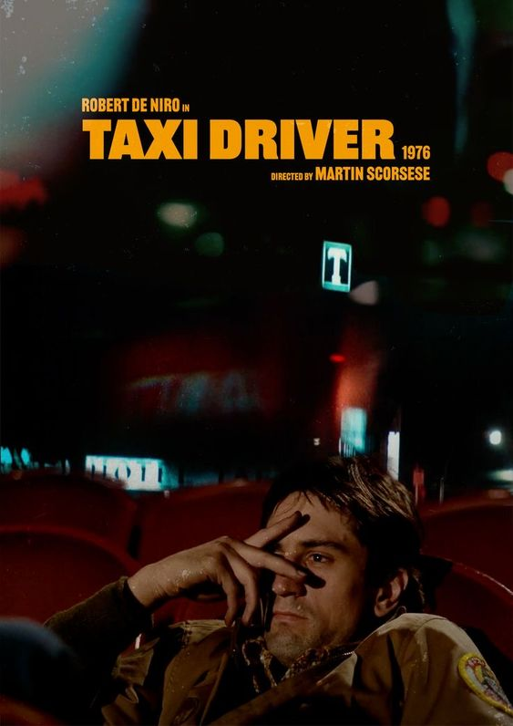
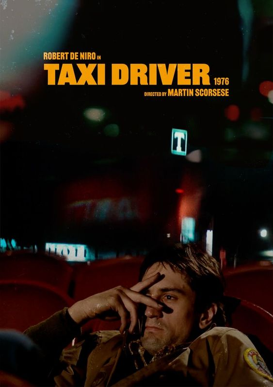

Taxi Driver
Sinópse:
"Taxi Driver" é um mergulho arrebatador na mente perturbada de Travis Bickle, um solitário motorista de táxi veterano de guerra em uma Nova York decadente. Atormentado pela alienação e desencanto, Travis desenvolve uma obsessão platônica por Betsy, desencadeando uma espiral de violência. Armado e determinado a purificar a cidade da corrupção, ele se torna um vigilante em uma missão sangrenta. O filme é uma poderosa exploração da alienação social, destacando a fina linha entre herói e vilão, com performances marcantes e uma trilha sonora icônica de Bernard Herrmann.
Sobre o filme:
Lançamento: 22/03/1976
Genero: Drama, Crime
Duração: 114min
Direção: Martin Scorsese
Comentarios:
Deixe seu comentário!
Felipe
Taxi Driver transcende o gênero de filme noir, tornando-se uma análise profunda da sociedade e da psique humana. Scorsese utiliza simbolismos visuais de maneira magistral, e a trilha sonora intensifica a atmosfera angustiante. Uma obra-prima indiscutível.
Maria
Taxi Driver é uma obra-prima de Scorsese, um retrato impactante da solidão urbana. A atuação de Robert De Niro é visceral, e a trilha sonora intensifica a atmosfera sombria. É um filme que permanece relevante, explorando as complexidades da psique humana.
Eduardo
A intensidade de Taxi Driver é avassaladora. A transformação de Travis Bickle é fascinante, e a cinematografia de Scorsese captura magistralmente a decadência da cidade. É um filme que desafia o espectador a questionar a moralidade e a justiça.
Larissa
Taxi Driver é uma obra-prima atemporal. A narrativa sombria e a interpretação magistral de De Niro fazem deste um dos filmes mais impactantes da história do cinema. Scorsese consegue capturar a essência da alienação de forma inigualável.
Felipe
A abordagem de Scorsese sobre a decadência urbana e a psicologia humana em Taxi Driver é extraordinária. A escolha estilística, combinada com a atuação brilhante de De Niro, cria uma experiência cinematográfica única e perturbadora.